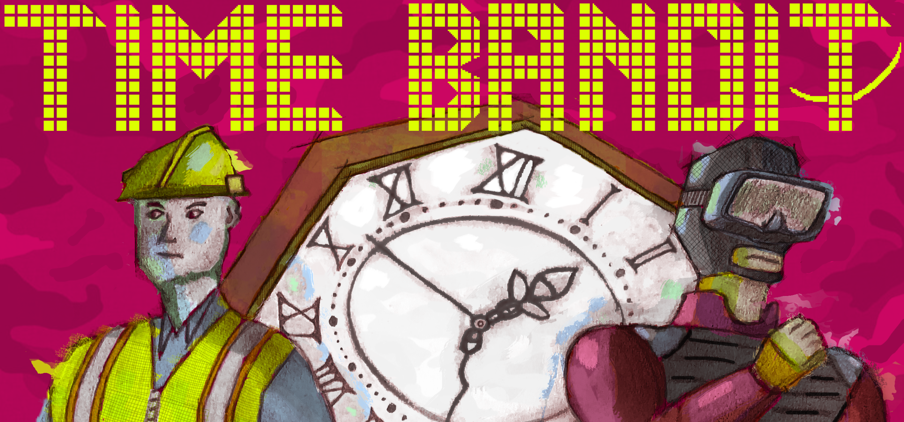

Description
Time Bandit is a unique idle adventure game that unfolds slowly in real time. Place down a robot to push a box for you, for example, and it will take an actual half an hour to finish.
It is being marketed as a wholesome life sim in which something seems to be terribly wrong. While at first your slower-paced job may seem like a nice retreat from the world that you came from, you soon discover the company you're working for is trying to use the time crystals you're collecting for them to take control of time and make you work for them forever. The game then moves in an unexpected direction, as you begin to steal back from the company in stealthy heists.
Time Bandit is a dark comedy that deals with themes of labor exploitation, both through its real-time mechanics and its storytelling. By saving the game and coming back later, you are invited to make as much or as little progress as you like, to make playing it a kind of habit or meaningful ritual, to welcome addictive gameplay loops or instead explore how to break them while watching the real-time sunsets. An explicitly anti-capitalist melodrama unfolds slowly over actual days and weeks of playtime, to inspire continuous reflection -- both while you are playing it and while you are not -- on how social and historical conditions shape our subjective experience of time. It tells a story of how our time does not belong to us and how we can take it back.
History
I'm the sole developer of Time Bandit, and I've been working on it for a long time, in a process that has turned out to resemble the real-time experience of playing the game. The time mechanics were originally inspired by an experience I had playing Animal Crossing in which checking in on my town every day for 10-15 minutes just to talk to my villagers, listen to the music, and walk along the beach became a significant part of my life. I thought about the capitalist logic still underpinning the escapism of this game where you can spend so much time doing tedious work in order to make money and upgrade your home, and yet at the same time the radical potential contained in its real-time mechanics that give you the option to ignore it all and just in general choose how you want to spend your time with the game. As I began designing an adventure game that would explore these themes of temporal experience, it became an experiment in the pacing of storytelling where I could play with a narrative extended greatly in time, and I took additional inspiration from the conspiracy-fueled atmosphere and political intrigue (not to mention the retro lowpoly art style and stealth mechanics) of the classic Metal Gear Solid games.
Other inspirations include the real-time mechanics of Pikmin, the ritualistic gameplay of Michael Brough’s VESPER.5, and the direct treatment of political themes in Brechtian theatre.
Features
- Manage your money, fuel, and energy while slowly solving puzzles to collect the time crystals and then pull off high-stakes stealthy heists to steal back from your employer.
- Move boxes, grow trees, build bridges, and compact trash--and wait for them to finish.
- A story that unfolds slowly through conversations that work like real-life phone calls. Characters will only call you periodically to advance the story over the course of days and weeks of playtime.
- Your energy meter goes down while you play, and it takes up to 8 real-time hours of good sleep to fill it up all the way.
- Different guard rotations and different consequences for getting caught depending on the time of day when you play.
- Meet characters at the actual meeting times that you set with them.
- Music that changes dynamically with the time of day.
- A real-time day-and-night cycle and weather tied to your actual location.
Videos
Gameplay Trailer — YouTube
Images
{kind=link}
{kind=link}
{kind=link}
{kind=link}
{kind=link}
{kind=link}
{kind=link}
{kind=link}
{kind=link}
{kind=link}
Logo & Icon
{kind=link}
Press Coverage
- "Time Bandit reimagines Metal Gear Solid as a darkly comic work sim" – PC Gamer
- ""Here are eleven 2022 indie games to look forward to" - Destructoid
Awards & Recognition
- A MAZE. / Berlin 2021 Audience Award - Among all nominees and honorable mentions, Time Bandit was voted winner by attendees of A. MAZE.
- A MAZE. / Berlin 2021 Long Feature Nominee - Time Bandit was selected as one of just 25 nominees out of 251 submissions from 48 countries.
- PLAY21 Creative Gaming Awards Honorable Mention - Time Bandit was selected as an honorable mention out of 146 submissions from 36 countries.
- Toronto Comics X Games 2021 Selection - Time Bandit was a selection for Toronto Comics X Games as part of the Toronto Comics Arts Festival 2021.
Time Bandit Credits
- Joel Jordon
- Itch.io page
Contact
- Joel Jordon
- joel.w.jord@gmail.com